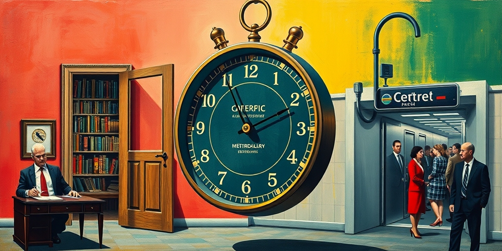

小汪老师的成长洞察 · 属于你的成长专栏
广州地铁三号线，早高峰。安检口前排起了蜿蜒的长队，一直延伸到站外的人行道上。每个乘客的背包被要求打开，每个夹层翻检，每瓶水拧开盖子。一个赶着上班的人看了看手表，他已经排了四十分钟。这不是安检升级，这是一场精心设计的崩溃。执行者没有偷懒，没有抗议。他们只是把规定执行到了物理上不可能站住的那一步。然后等着规定自己倒下。这把武器叫“照章办事”。它安静，合法，且无懈可击。
2026年夏天，广州地铁因为一次暗访被推上风口。暗访人员携带违禁品顺利通过安检，漏洞曝光。上级部门震怒，处罚了负责安检的第三方公司。处罚通知上写着四个字：立即整改。安检公司的回应极其简单：把安检严格到每个人、每个包、每瓶水都查。几天后，早高峰的地铁站入口变成了停车场。乘客排起长队，通勤时间翻倍，投诉电话打爆了交通局。
这不是安检公司突然良心发现。这是一道精确的数学题。安检员正常状态下每小时可以检查大约三百人。当检查标准提高到“每个包打开、每个夹层翻检、每瓶水拧开闻”，单人耗时从十秒拉长到两分钟。那么同一小时内能通过的乘客数量从三百人暴跌到三十人。早高峰一个地铁站入口的客流是上千人。排队时间必然超过四十分钟。安检公司知道这个结果。他们选了让堵塞发生。不是因为他们想报复，而是因为他们发现，只有堵塞发生，管理者才会收回那个无法执行的命令。
管理者能罚他们吗？罚什么？罚他们严格执行了你的每一条规定？安检员没有怠工，没有提前下班，没有放人过关。他做的每一件事都在你写的规章里。你罚不了他，因为惩罚他的前提是你先承认你的规定做不到。没有一个管理者愿意在正式文件里写“请不要太认真执行本规定”。所以最后只能松口，说一句“恢复常态化安检水平”。这句话是管理者能给出的最接近“之前的标准我错了”的一句话。但从头到尾他没有说过一个“错”字。他甚至可以在总结报告里写：“经整改，安检质量显著提升，后为保障通行效率，恢复常态化管理。”他把自己摘干净了。
这就是照章办事的第一课：你不需要对抗规定。你只需要把它执行到它自己承受不了的程度。认真做和做绝之间有一条线。认真做是每个包都看一眼。做绝是每个包都翻个底朝天。后者在物理上不可能不造成堵塞。安检公司选了后者。他们不是在执行规定，他们是在让规定自己走到它物理上不可能站着的那一步。然后倒下。他们甚至不需要推。他们只是没有像往常一样，替规定打折。
这种事不是第一次发生。国际上有一个专门的名字：work-to-rule，照章办事。英国铁路工人照章办的时候，列车出发前检查清单有47项。正常跑车时，大部分项目是目测加经验，十五分钟内发车。一旦决定“严格按规章执行”，每一项仔细来，发车时间变成四十五分钟。整条线的运力直接崩盘。法国海关官员照章办的时候，每位旅客护照查验从三秒变成三十秒——每一页翻、数据库核验、水印检查。机场入境大厅堵塞上千人。管理者最后都是同一句话：“恢复正常。”跟广州地铁一模一样。
美国空中交通管制员在1981年罢工失败后，也用过照章办事。他们严格遵循每一条安全间隔规定，航班起降间隔被拉长到正常的两倍。全美航班大面积延误，航空公司损失惨重，但管制员没有违反任何一条规章。最终联邦航空管理局不得不重新谈判工作条件。日本成田机场的行李搬运工在劳资纠纷中，也把行李搬运流程执行到极致：每件行李轻拿轻放，按规定间距摆放，传送带速度骤降，航班延误。管理者同样只能让步。照章办事这把武器，跨越国界和行业，反复被使用。它不需要组织，不需要领导，不需要任何一个人站出来承担风险。它只需要每一个人都做同一件最安全的事：严格执行。
中国版本有它的特殊性。主角多数是外包公司的底层执行者。安检员不是地铁公司的正式员工，是第三方公司的人。公交司机也不是交管局的直属。上层发通知，中层分包，底层被罚。他们是整个链条里离权力最远、离板子最近的那一环。他们没有集体谈判权，不能罢工。投诉到了上一层，上一层就是发处罚通知的那个人。他们唯一的武器就是“把规定做绝”。不是偷懒，不是取巧。是在规则正面上做足文章，不打折扣，不省略步骤，不额外加速。全收到规则自己倒下为止。
南京公交的限速令是另一个样本。2024年，南京交通管理部门要求公交车限速每小时四十公里，以降低事故率。司机们没有拒载，没有旷工。每一辆车都在路上跑，每一辆都严格遵守限速。路上的一切都合法。但城市公交的平均运营速度从每小时二十五公里掉到了十五公里。市民通勤时间翻了一倍。公交准点率崩溃，乘客投诉激增。规定收回的时候，没有一个人需要为收回这件事负责。规定是自己收回的。你找不到罚谁，你找不到批谁。你的系统在呻吟，你听到的声音是所有人都在说：“我在按规定做。”一位司机私下说：“限速四十？那我就开四十。堵车是路的事，不是我的事。”
照章办事的威力在于，它把规定本身变成了管理的对手。而在这场对决里，规定每次都输。因为规定是被人写出来的，而写出来的人不站在安检口，不坐在驾驶座，不拿着护照翻页。他站在办公室里，看着数据，听着汇报，但闻不到安检口那个被拧开瓶盖的矿泉水瓶的味道。

管理者为什么不提前想到这一步？因为他们不在安检口站着。一个在空调办公室里写“加大安检力度”的人，不知道“加大”意味着多排队一千人。他只知道他需要一份可查的痕迹：“我已责令整改。”他不需要知道这个责令在物理上能不能被执行。他只需要它在文件上被执行。等到长队排到站外，交通局接到投诉，市长过问了，那个文件上的责令就会变成另外四个字：“恢复常态。”然后他的痕迹还在：“我已责令整改。”他做到了他要的东西。安检公司也做到了他们要的东西：不被罚了。双方互相满足了对方的形式需求。代价是排着队的你和我。
这个事会反复发生。这是一个死循环。暗访不会停，漏洞不会消失，处罚不会不罚，处罚之后的执行不会不做绝，做绝之后的瘫痪不会不出现，瘫痪之后的松口不会不来，松口之后的下一次暗访不会不开始。这个循环在逻辑上不可打破，因为每一环在规则层面都无懈可击。这不是某个人的问题。这是制度节拍器在自动打拍。每隔一段时间，它会准时响一次。你听到的不是安检口的长队。你听到的是节拍器敲了一声。
深圳地铁在2025年上演了同样的剧本。暗访，处罚，严查，瘫痪，松口。一模一样。照章办事这台机器不需要创新。它只需要每一次都做同一件最安全的事：严格执行。它的威力在于，它把规定本身变成了管理的对手。而在这场对决里，规定每次都输。因为规定是被人写出来的，而写出来的人不站在安检口。他站在办公室里，看着数据，听着汇报，但闻不到安检口那个被拧开瓶盖的矿泉水瓶的味道。
这个循环之所以不可打破，是因为每一方都在做对自己最安全的事。暗访组必须查出漏洞，否则就是失职。上级必须处罚，否则就是纵容。安检公司必须严查，否则就要再被罚。而严查必然导致瘫痪。瘫痪之后上级必须松口，否则城市交通崩溃的责任他担不起。松口之后安检标准回落，下一次暗访必然再次发现漏洞。这是一个闭环的逻辑链条，每个节点上的人都在做“正确”的决定。但所有正确的决定加起来，构成了一台自动运行的崩溃机器。
更深一层看，这个循环暴露了现代管理制度的一个根本悖论：规则是抽象的，执行是具体的。抽象规则追求完美覆盖，具体执行受限于物理时空。当抽象规则被原封不动地搬到具体场景里，它要么被打折执行，要么把场景撑破。大多数时候，规则被打折执行，系统勉强运转。但一旦执行者决定不打折，规则就会把系统撑破。照章办事就是那个“不打折”的瞬间。它让所有人都看到，那些平时被默许的“灵活处理”，才是系统真正运行的润滑剂。而一旦润滑剂被抽走，齿轮就会卡死。
这种现象在社会学里有一个概念叫“目标置换”。规则本来是实现目标的工具，但当规则本身成为考核标准，执行者就会把遵守规则当成目标，而忘记规则原本要达成的目的。安检的目的是安全，不是翻包。但当“翻包”成为考核指标，安检员就会把翻包当成任务本身。照章办事是目标置换的极端化：执行者明知规则无法达成目的，却故意遵守，以证明规则的荒谬。这是一种理性的表演，一种用服从包装的反抗。
你在办公室里也遇到过。你接到一个不合理的工作要求。你不能说“这没法做”——说了就是态度问题。你不知道自己有三种武器：严格按流程执行，不省略任何一个步骤，不额外加速。当一个任务“正常做”需要四十分钟，“严格按流程做”需要三小时，你只要切换到后者。你不会被指责。你“做得很认真”。你的领导看着三小时的耗时说不出哪里不对。流程是他写的，步骤是他定的，时间是你如实花的。他唯一能做的就是下次少给你不可执行的流程。
这不是偷懒。偷懒是少做。这是多做了一堆必要但不紧急的事。它的目的是让不可见的系统矛盾变成肉眼可见的代价。你不需要说服任何人。你只需要让规定自己开口说话。而一个自己开口说话的规定，说出来的第一句话通常是：“对不起，我没想到。”
举个例子。你所在的部门被要求每周提交一份详细的项目进度报告，包含二十个数据维度。正常做，你花一个小时从系统里拉数据，填个大概。领导也只看个大概。突然有一天，你对这个要求不满，或者你被批评报告质量不高。你决定严格照办。你花六个小时，把二十个维度的数据逐一核对，交叉验证，附上来源和备注。报告交上去，领导看了十分钟，发现很多数据他根本不需要。但他说不出你哪里做错了。你“做得很认真”。下周，报告模板被简化了。你没有提过一个字的意见。你只是把旧模板执行到了它自己臃肿得走不动的那一步。
再比如报销流程。公司规定报销必须附上每一张发票的消费明细、用途说明、部门审批、财务复核。正常大家贴几张发票，写个大概，财务也就过了。有一天你被财务退回了一次，理由是用途说明不够详细。你决定照章办事。下一次报销，你把每张发票背后的故事写得像短篇小说：和谁吃饭，谈了什么项目，为什么选这家餐厅，菜品价格是否合理。财务看着厚厚一叠说明，哭笑不得。但规定是你定的，我写了，你总不能退。几次之后，财务主动找你领导说：“那个用途说明的要求是不是可以简化一下？”你没有抱怨过一句。你只是把那条规定的荒谬性用你的认真放大了十倍。
你不需要拍桌子，不需要写邮件，不需要站出来承担风险。你只需要在你被给了一个无法执行的流程时，不打折扣地执行它。后果不是你来解释的。后果是这个流程自己解释的。你只是一个认真读了流程，认真做了每一步，然后把结果如实交上去的人。管理者看着结果说不出哪里不对。这个瞬间——他沉默的那两三秒——就是照章办事这台机器最安静也最锋利的那一下转动。他没有被你的话说服。他被自己写的那张纸说服了。
当然，这把武器有它的代价。你可能会被贴上“不懂变通”的标签。你可能会被认为“缺乏主动性”。但如果你在一个已经被不合理规定压得喘不过气的环境里，这些标签的代价，远小于你直接说“不”的代价。照章办事是一种防御性武器。它不进攻，它只是让进攻者被自己的重量压垮。而且它有一个好处：你全程都是“好员工”。你在执行，你在遵守，你在认真工作。你唯一的“罪过”是太认真了。而这个罪过，没有哪个管理者敢写在考核表上。
写给你的话
你学会了这把武器。但有一天，你坐到了写规定的位置。你会不会也写出那些只能在文件上成立、在物理上必然崩溃的规则？照章办事是一把刀。它切碎不合理的规定，也切出制度里那些根本不想被认真对待的条文。你握着它，但你也可能成为被它对准的人。这把刀没有主人。它只属于那些愿意把它执行到底的人。
而当你成为写规定的人，你唯一的防御是：在写下每一条规定之前，先问自己，如果有人把这一条执行到极致，我能不能承受那个后果。如果你不能，那就不要写。如果你写了，那就要准备好有一天，一个安静的底层执行者，会用它把你的系统撑破。他不会提前通知你。他只会在某天早上，让你的办公室电话响个不停。然后你走到窗前，看到楼下排起的长队，你会想起自己写过的那张纸。
小汪老师的成长洞察 · 属于你的成长专栏